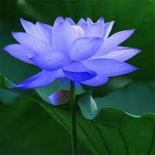

Lotus
A flower, sometimes known as a bloom or blossom, is the reproductive structure found in flowering plants (plants of the division Magnoliophyta, also called angiosperms). ... Self-pollination happens when the pollen from the anther is deposited on the stigma of the same flower, or another flower on the same plant.
Nelumbo nucifera, also known as Indian lotus, sacred lotus, or simply lotus, is one of two extant species of aquatic plant in the family Nelumbonaceae. It is sometimes colloquially called a water lily, though this more often refers to members of the family Nymphaeaceae. Lotus plants are adapted to grow in the flood plains of slow-moving rivers and delta areas. Stands of lotus drop hundreds of thousands of seeds every year to the bottom of the pond. While some sprout immediately, and most are eaten by wildlife, the remaining seeds can remain dormant for an extensive period of time as the pond silts in and dries out. During flood conditions, sediments containing these seeds are broken open, and the dormant seeds rehydrate and begin a new lotus colony.
Under favorable circumstances, the seeds of this aquatic perennial may remain viable for many years, with the oldest recorded lotus germination being from seeds 1,300 years old recovered from a dry lakebed in northeastern China. Therefore, the Chinese regard the plant as a symbol of longevity.
It has a very wide native distribution, ranging from central and northern India (at altitudes up to 1,400 m or 4,600 ft in the southern Himalayas), through northern Indochina and East Asia (north to the Amur region; the Russian populations have sometimes been referred to as "Nelumbo komarovii"), with isolated locations at the Caspian Sea. Today the species also occurs in southern India, Sri Lanka, virtually all of Southeast Asia, New Guinea and northern and eastern Australia, but this is probably the result of human translocations. It has a very long history (c. 3,000 years) of being cultivated for its edible seeds, and it is commonly cultivated in water gardens. It is the national flower of India and Vietnam
Lotus plants are adapted to grow in the flood plains of slow-moving rivers and delta areas. Stands of lotus drop hundreds of thousands of seeds every year to the bottom of the pond. While some sprout immediately, and most are eaten by wildlife, the remaining seeds can remain dormant for an extensive period of time as the pond silts in and dries out. During flood conditions, sediments containing these seeds are broken open, and the dormant seeds rehydrate and begin a new lotus colony.